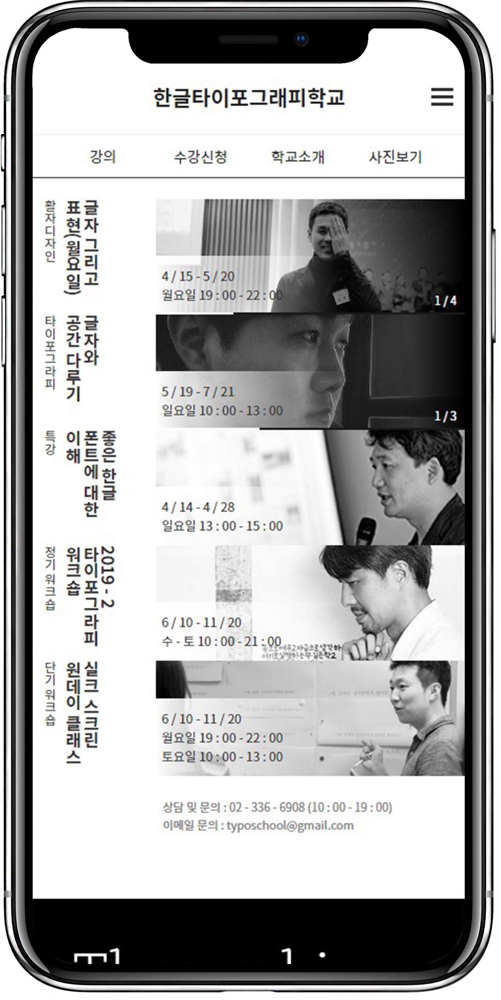

- 
-
 원본사이트
원본사이트
03한글타이포그라피학교
2 weeks
- 기획 100%
- 디자인 100%
- 코딩 100%
- MOBILE
- CSS3
- CROSS BROWSING
- JQUERY
타이포와 관련된 곳이라는 것이 웹사이트에서 보일 수 있는 것을 목표로 작업하였습니다. 흑백을 메인컬러로
사용하였고 강조해야 하는정보만 노란색 컬러를 사용하였고 세로쓰기를 사용하여 편집물의 느낌을
주었습니다. 메인화면의 경우 중요한 정보들인 현재 진행중인 강의, 오시는 길, 수업과 관련된 결과물을
배치하였습니다.